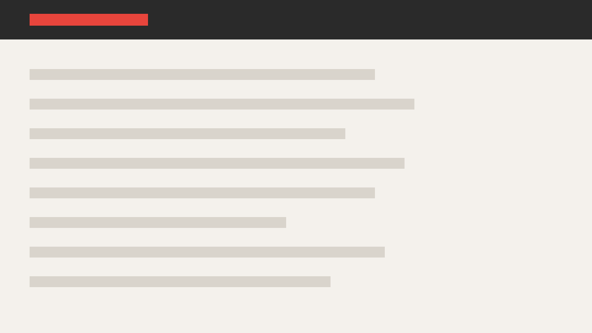

Pavel Korolev
About me
Pavel Korolev
Role and company
What you work on and why you are talking about it
t.me/pavelkorolevxyz_channel
Agenda
Add a note only if the claim is unclear without it
List
Before
Average review time
1,240
After
Average review time
180
A quote of one or two lines, no longer
Key metrics
Code
// a comment on the snippet
function example(input) {
const result = transform(input);
if (!result) return null; // the line this slide is about
return `done: ${result}`;
}Explain what follows from the code instead of reading it line by line
Figure with a note
Say what to look at and what follows from the image.
Full-screen screenshot
Table
| Name | Category | Count | Share |
|---|---|---|---|
| Short name | Primary | 1,240 | 46% |
| A parameter of medium length | Secondary | 620 | 23% |
| A longer parameter name | Rare category | 840 | 31% |
| Total | All categories | 2,700 | 100% |
Give the source, the period and the unit.
Sequence of steps
A short description.
A step description that takes two lines.
A longer step description, with enough text to test how it fits on three lines.
One sentence of medium length.
Chart with a finding
Give the source, the period and the unit.
The peak falls in the middle of the period
Give the source, the period and the unit.
Growth starts after June
New stream
Old stream
Give the source, the period and the unit.
One stage takes half the time
Give the source, the period and the unit.
Automated checks are replacing manual ones
Give the source, the period and the unit.
The new stream overtakes the old one in April
Give the source, the period and the unit.
Search changed the least
Give the source, the period and the unit.
Timeline
The first event
What happened next
A period, not a point
The event that explains the outcome
Where things stand now
Process diagram
Before
After
Takeaways
Resource and QR code
What a Craft page is built from
One screen over three iterations
One command runs the check
python3 scripts/check_project.py ./talk
✓ static contracts: slides
✓ Chromium: 1440, 390 and 320 px, theme, accessibility and PDF
✓ deck states: 24 pages, 12 slidesThe same screen before and after

Before AfterLong page
Pavel Korolev Event name